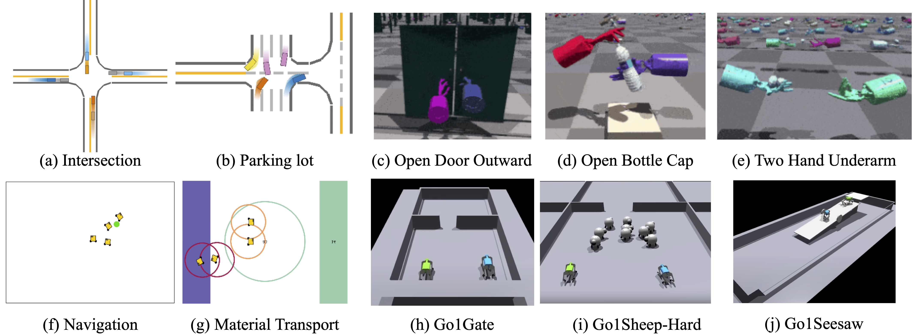

Learning to Interact in World Latent for Team Coordination
-
Dongsu Lee
UT Austin. -
Daehee Lee
SKKU. -
Yaru Niu
CMU. -
Honguk Woo
SKKU. -
Amy Zhang*
UT Austin. -
Ding Zhao*
CMU.
* Equal Advising
Question
- Imagine a team of robots collaborating to achieve a common goal, such as transporting materials in a warehouse or driving autonomously in shared traffic.
- What types of information should each robot require to effectively coordinate with its teammates under partial observability?
-
While many factors may matter, we posit that two elements are likely crucial:
- (i) Inter-agent relations – who influences whom, and how their roles complement one another.
- (ii) Task-specific world information – a compact surrogate of the global state that helps robot agents reason and understand their task.
Why Representation, Not Communication?
-
We acknowledge communication is powerful for multi-agent coordination.
However, communication is not practical in many real-world scenarios due to:
- This is vulnerable! When imposing a bandwidth limit on communication (Type I) or considering adversarial agents with message-corruption attack (Type II), communication-based methods are easy to fail at Deployment phase.
- This is fundamentally centralized solution. It relies on a shared communication channel or synchronized messaging, which limits scalability and contradicts the decentralized nature of many real-world systems.
The IWoL Representation
- In this work, we propose IWoL, a novel representation learning framework for MARL, which capture inter-agent relations and task-specific world information.
-
We would like to highlight key features of IWoL:
- IWoL is simple and practical for team coordination. Thanks to the simplicity of on-policy's end-to-end training scheme, IWoL representation can be captured via a single encoder and multiple decoders to learn inter-agent relations and task-specific world dynamics for team coordination. Learned representation can be used in deployment without additional modules, e.g., communication or estimation.
- IWoL is compatible. It works as plug-and-play module that can be combined with existing MARL algorithms, improving their performance without altering their fundamental structure.
- IWoL is scalable. It can be used in explicit and implicit communication settings by handling complex multi-agent coordination, achieving strong performance on a variety of challenging robotic tasks.
Architectural Overview
- Observational encoder: Each agent encodes its local observation into a latent via self-attention.
- Communication module: We employ communication module to learn inter-agent relationships via two steps: (i) additive self-attention and Gumbel softmax schedule whom to communication with, and (ii) Transformer block processes the messages what to communication. This can provide surrogate inter-agent relationship information into the IWoL encoder in training.
- RL networks: We consider individual policy and value function for each agent with a feed-forward layer. Herein, a policy network is set in a stochastic form.
Interactive World Latent (IWoL)
Our goal is to build an IWoL representation \(z_i^t \)
that captures inter-agent relationships and privileged world information.
For this, the IWoL includes the following three modules.
$$ \underbrace{z_i^t = \mathrm{Encoder}_{\mathrm{IW}}(f_i^t)}_{\mathrm{Interactive~World~Encoder}}
\quad \quad
\underbrace{\hat{m}^t_i = \mathrm{Decoder}_{\mathrm{I}}(z_i^t)}_{\mathrm{Interactive~Decoder}}
\quad \quad
\underbrace{\hat{s}^t_i = \mathrm{Decoder}_{\mathrm{W}}(z_i^t)}_{\mathrm{World~Decoder}} $$
- Interactive World Encoder: The encoder takes the encoded local observation \(f_i^t\) as input and produces the IWoL representation \(z_i^t\).
- Interactive Decoder: This reconstructs the messages \(m_i^t\) that agent \(i\) would receive from others, encouraging \(z_i^t\) to preserve inter-agent dependencies.
- World Decoder: This reconstructs the agent’s privileged state \(s_i^{t}\), encouraging \(z_i^t\) global signals beyond local observation.
- Here, \(\mathcal{L}^{\mathrm{RL}}_\pi(\phi_i)\) is the RL loss for policy network with parameters \(\phi_i\).
- \(\lambda_{\mathrm{W}}\) and \(\lambda_{\mathrm{I}}\) are the coefficients for the world and interactive losses, respectively.
Experiments (Cooperative MARL)
Environments

- For online cooperative MARL, we consider four challenging robotic environments, including MetaDrive, Robotarium, Multi-agent Quadruped Environment (MQE), and Bi-DexHands.
Experimental Results
- IWoL variants achieve the best or second-best performance and success rate on most tasks.
- In particular, our approach achieves up to \(48.2\%\) and \(20.0\%\) in MQE and Bi-DexHands, where previous baselines record near-zero success in three tasks (Go1Sheep, Go1Seesaw, and Two Catch Underarm).
Citation
@misc{lee2025learning,
title={Learning to Interact in World Latent for Team Coordination},
author={Lee, Dongsu and Lee, Daehee and Niu, Yaru and Woo, Honguk and Zhang, Amy and Zhao, Ding},
year={2025},
eprint={2509.25550},
archivePrefix={arXiv}}
The website template was borrowed from Seohong Park, Michaël Gharbi, and Jon Barron.